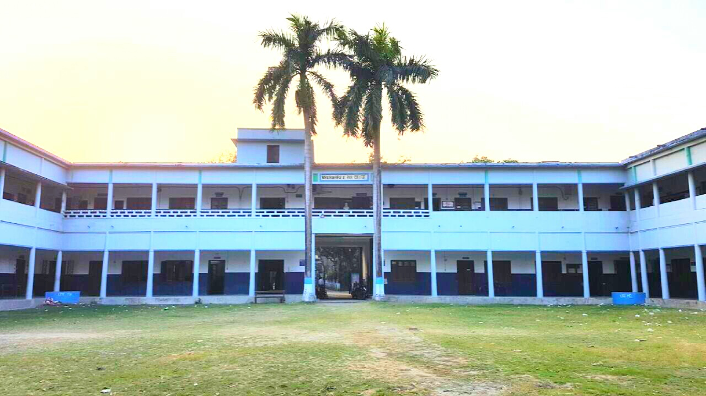

NABAGRAM HIRALAL PAUL COLLEGE
Nabagram Hiralal Paul College, also known as Konnagar College, established in 1957, is one of the
oldest colleges in Konnagar, in the Hooghly district, West Bengal, India. It offers undergraduate
courses in arts, commerce and sciences, as well as a postgraduate course in Bengali. It is affiliated
to University of Calcutta.

DEPARTMENTS
(UNDER-GRADUATION)
| Science |
Arts and Humanities |
Commerce |
B.Voc |
| Chemistry |
Bengali |
Finance and
Accounting |
Retail
management |
| Physics |
English |
|
Hospitality and
Tourism |
|
Mathematics |
psychology |
|
|
Economics |
Sanskrit |
|
|
History |
|
|
|
Political
Science |
|
|
|
Philosophy |
|
|
|
Hindi |
|
|
|
Sociology |
|
|
|
Education |
|
|
The University of Calcutta, located in Kolkata, West Bengal, is one of the oldest and most renowned educational
institutions in South Asia. It was established in 1857. There are several colleges and institutes that are
affiliated to this university. At present, there are approximately 160 institutes which comes under this
university, which are mostly located in the districts of Kolkata, Howrah, Hooghly, and South 24 Parganas.
LIST OF AFFILIATED COLLEGES (HOOGHLY)
- Bidhan Chandra College, Rishra,
- George School of Law, Konnagar, Hooghly
- Gourmohan Sachin Mondal Mahavidyalaya, Bireswarpur
- Mahitosh Nandy Mahavidyalaya, Jangipara
- Sree Agrasain College, Liluah
- Serampore College, Serampore
- Serampore Girls' College, Serampore
- Nabagram Hiralal Paul College, Konnagar
- Raja Peary Mohan College, Uttarpara
- Swami Niswambalananda Girls' College, Bhadrakali
- Vidyasagar Mahavidyalaya, Masat